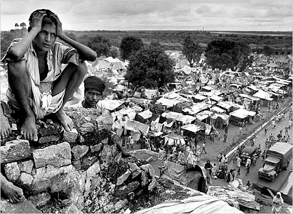

Amit Majmudar’s PartitionsMetropolitan Books, New York, 2011
211pp USA $25 ISBN: 978-0-8050-9395-7 In 1947, what had been British India was split into an independent, Hindu-majority India and a new Muslim-majority nation, Pakistan. This was Partition, and it led to the most massive short-term population movements in human history. Thousands on thousands of Muslims in regions assigned to the new India fled their homes and made their way, some by train but most on foot, toward Pakistan, while thousands on thousands of Hindus and Sikhs in regions designated as Pakistan made the reverse migration to the new India. On both sides there was savage violence (especially in the Punjab) against minorities, whether staying or trying to leave. Some were murdered wholesale on the trains.
Partition meant not only a political and logistical nightmare on a huge scale, but also, as this novel’s plural title suggests, wrenching personal dislocations and divisions within families and within the psyches of individuals.
***
I’m not the novel-reader I once was. I used to devour a book at a single sitting, surrendering easily to the spell of the story and the writing. Now, in place of the optimistic “Why not?” when faced with a novel, I often find myself asking, “Why should I read this?” And if I get over that hurdle, it then takes a special effort of will for me to lose myself in the text, to allow myself to be simply carried along by it. I suppose I’ve grown more impatient, more conscious of vanished and vanishing time. I seldom read a novel now, but I willingly made the effort for Partitions. Novelists of Indian origin have usually appealed to me in the past, and I happen to admire Amit Majmudar’s poetry. I didn’t think I would be disappointed with this book; nor was I.
Majmudar is an established and skilled poet besides being, in his day job, a medical specialist. This, his first published novel, tells a graphic story of the impact of Partition on four people, on both sides of the divide.
He is also the son of a doctor. The medical background shows in the many careful details of anatomy, physical injury and illness. And the story involves two doctors. One is a shy, elderly Muslim, clutching his battered medical bag as he limps, among other refugees, toward Pakistan, treating injuries as he goes. The other, Dr Roshan Jaitly, the narrator, is a Hindu, a Brahmin who disgraced himself in the eyes of his family by marrying a girl of unknown, probably inferior, caste. Or rather, he was a Hindu doctor. He has passed on and is now a disembodied spirit, periodically placing himself “in the sky” to look down with a bird’s-eye view on the chaos below, the vast rivers of people hoping to reach some kind of safety.
For some, there is the railway route. On trains jampacked with passengers — inside, outside and on the roof:
The outriders lock fists on the rust-pocked metal of the handrails. The children are stowed in baggage-niches, chins to knees, heels to buttocks, wrists to shoulders, everything that can bend, bent. The women hold their saris across their faces to protect against the pestilence of men’s gazes.
The book conveys something of the vast numbers involved — in total perhaps as many as twelve million people were displaced — but follows the personal journeys of four individuals in particular: Dr Jaitly’s twin sons Keshav and Shankar, about seven years old, whom he has left behind with his widow; the Muslim doctor, Ibrahim Masud; and a fifteen-year-old Sikh girl, Simran Kaur, who has fled her home and the father who was about to kill her to prevent her falling into Muslim hands.
The immaterial Dr Jaitly follows these four, out of all the human flotsam on the rivers of people, kafilas as he calls them, refugee columns as the British called them. Not to give away the entire story, but the fates of these four are destined to converge. And given this convergence from separate geographical locations, the sub-omniscient first-person narrator seems an astute choice. While not all-knowing and all-seeing, Jaitly’s spirit is able to transfer his attention from one place, one set of events, to another, and to some degree he can read minds, or at least sense the general drift of someone’s thoughts and emotions. And though deceased, he still shares our humanity and enlists our empathy, adding an extra dimension over what a neutrally all-seeing, all-knowing narrator could have offered. Well, it works for me, whatever the rationalist professors and guru-busters of today’s India might think of it.
Morning. I am in the sky again. I take in the kafilas. They are broader than I remember. Great human rivers, the vanished Sarasvati reborn with all her tributaries. My mind bobs on those slow rivers, a paper boat. The one I want trickles east-west. Migrant field hands who walked one way to eat now walk the other way to starve. Craftsmen have left their workbenches tipped over, as if whoever had been working there sprang to his feet at a klaxon’s sound.
***
A novel by a poet can set us thinking about the relationship between the genres. Graham Greene wrote something to the effect that the prose of a novel should have no whiff of poetry about it. Sweeping “shoulds” are surely suspect in any art form, but I think he meant that good prose fiction usually avoids the distraction of too obviously poetic rhythms in its language, in other words that it has no whiff of verse about it. On the other hand many readers are moved by the “poetic” closing cadences of, say, Wuthering Heights or A Tale of Two Cities or The Great Gatsby. Greene himself started out trying to be a poet before he was a novelist: his first published book was a collection of his undergraduate poems. Did that poetic bent turn out to be an asset in his novel-writing? I think so, if we concede that poetry is often in essence a way of seeing or a way of showing. In a good novel, a subliminal poetry may lurk. Not in the language rhythms so much as in the coherence and conviction of the images, a kind of filmic fidelity — descriptions that in some alchemical manner crystallise the scene for the reader’s mind.
One of the strengths of Partitions is that it has that filmic credibility. It’s full of precise images with the subtle stamp of the author’s way of seeing. And the mostly present-tense narration enhances the story’s graphic immediacy. Indeed, although the ghostly narrator might present difficulties, there’s surely potential for a movie from this book. (Please, though, not Ben Kingsley as Dr Masud!)
Certain passages and scenes are emblematic of the whole crazy enterprise that was Partition. The stupefyingly bureaucratic Indian Civil Service (based closely on the 19th Century British model) was responsible for parcelling out its own assets equally to Pakistan and India. Hence the scene (and this sort of thing actually did happen) where “policewallahs” go about their methodical, super-slow work of ripping useful ledgers into two useless halves: left-hand pages to Pakistan, right-hand pages to India. Or vice-versa; it would make no difference. The single telephone in the police chowki (station) is the subject of some discussion, and a solution is amicably reached:
Masud makes a noise with his throat. They look up from their task.… Metal parts, the bell and the arm that strikes it, the dial — the telephone is disassembled, and collected into a heap of parts. They begin to haggle over each component. At last the phone is evenly distributed.
But be warned: the light relief is infrequent. Fear, pursuit, and violence are recurring themes. This book is strong stuff: what some people will do to other people in the name of their group differences, the religious or political partitions between them, is truly horrifying, and the detail is not spared here. Bodies litter the streets. Trains become mobile slaughterhouses. Simran falls into the hands of men who capture girls to sell. The twins are sold to a childless woman, and later, over the border, a group of men — not Muslims but fellow Hindus — want to burn one of them alive for having “come from Pakistan”.
In a scene that sticks in my mind, a proud bearlike Sikh, perhaps as strong as two ordinary men, is held down and beaten in a town square as he struggles hugely to get free.
…The policewallah behind me picks the bidi from his mouth and shouts, “Get on top of him, Ismael! Get on him!” The whole tangle of bodies falls in a mound, the Sikh at the bottom of the pile, and a cheer goes up from the crowd. They begin to chant kes, kes, kes, and two more men come out of the crowd.…
After his turban is removed and his long hair hacked off, he gives up the struggle (from shame, I suppose). Someone brings a bigger knife, and they cut his throat. This whole spectacle is watched by the young twin boys, the police deaf to their protests.
***
Fortunately the novel’s resolution, in the final thirty pages or so, does bring some optimism, acknowledging that fanatics and lynch mobs — the “bad men” — are a minority, ultimately outnumbered by reasonable and humane people who take others as individuals. There could be no better exemplar of the latter than the Sikh bus-driver, and for me the most heartening passage in the book begins with the sentence, “Deepjyot Singh speaks up from his high seat.”
Throughout, the action is so graphically conveyed, the imagery so sharp and exact, that we are there. There with the twin boys (one with heart trouble) as they follow the railway line, trudging from station to crowded station in search of their mother. There in the sugar-cane field with Simran as she tries to outrun the trader “in girls” who now also has rape on his mind. There in the kafila with the wounded, the thirsty, the footsore, there with the tall, thin Masud and his battered black doctor’s bag, his iodine bottle and gauze, and the scrawny stray dogs that surround and follow him.
Reading Partitions has been an enlightening and affecting experience for me. It was a long time since I had read a novel, and longer still since one had brought me to tears. If numerous stops and starts and rereadings interrupted my progress, blame that on my fall from fiction-reading innocence, not on the book. This is a novel of remarkable poetic force. It asked me to invest a few hours and to put up with some fleeting growing-pains in the distal vocabulary — I knew what a dhoti was, but had to look up kara, kameez, chowki, and maybe one or two others. And the book has repaid my effort many times over. The rough, bare-bones history that I half-knew has been fleshed out into a far more tangible, human understanding of what Partition must have meant to the people personally caught up in it. I highly recommend this beautifully written book.
|